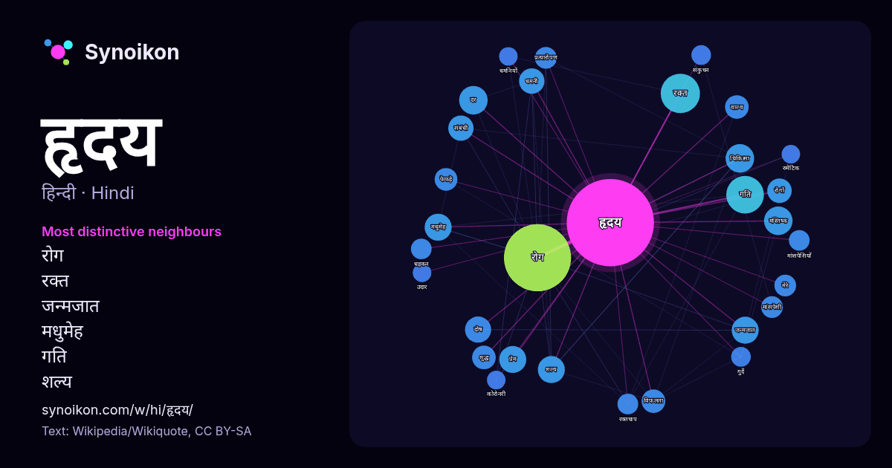

हिन्दी · लोकप्रिय शब्द
हृदय
“heart” · विकिपीडिया, Wikiquote के 1066 प्रयोगों में इसके आसपास मिले शब्द।

सबसे विशिष्ट पड़ोसी
- रोग 49×
- रक्त 22×
- जन्मजात 17×
- मधुमेह 16×
- गति 16×
- शल्य 16×
- धमनी 15×
- मस्तिष्क 14×
- दोष 14×
- वाल्व 13×
- विफलता 13×
- फेफड़े 12×
- रोगों 11×
- प्रेम 11×
- प्रत्यारोपण 11×
- मांसपेशी 11×
- धड़कन 11×
- चिकित्सा 10×
- रक्तचाप 10×
- दर 10.0×
× = सामान्य विकिपीडिया टेक्स्ट की तुलना में कितने गुना अधिक।
सबसे अधिक आने वाले पड़ोसी
- रोग 105
- रक्त 36
- कारण 34
- गति 33
- प्रकार 23
- चिकित्सा 19
- दर 19
- मस्तिष्क 19
- शरीर 19
- मानव 18
- जन्मजात 17
- प्रेम 17
- मधुमेह 17
- मुख्य 17
- शल्य 17
- दोष 16
- धमनी 15
- संबंधी 15
- समान 15
- कम 14
संदर्भ में
- हृदय हृदय पेशी (cardiac muscle) से बना होता है, जो एक अनैच्छिक पेशी (involuntary muscle) ऊतक है, जो केवल हृदय अंग में ही पाया जाता है। औसतन मानव हृदय Wikipedia snippets · हृदय
- हृदय शरीर का एक महत्त्वपूर्ण अंग है। मानवों में यह छाती के मध्य में, थोड़ी सी बाईं ओर स्थित होता है और एक दिन में लगभग एक लाख बार एवं एक मिनट में 60-90 Wikipedia snippets · हृदय रोग
- हृदयेश एक हिन्दी लेखक थे। हृदयेश (हृदय नारायण मेहरोत्रा) का जन्म शाहजहाँपुर, उत्तरप्रदेश में सन १९३० में हुआ था। वो एक प्रसिद्ध लेखक (कथाकार एवं उपन्यासकार) Wikipedia snippets · हृदय नारायण मेहरोत्रा
- एक जन्मजात हृदय दोष ( सीएचडी ), जिसे जन्मजात हृदय विसंगति या जन्मजात हृदय रोग भी कहा जाता है, जन्म के समय मौजूद हृदय की संरचना में एक समस्या है । लक्षण Wikipedia snippets · जन्मजात हृदय रोग
- हृदय चक्र मानव हृदय का कार्य है जिसमें एक धड़कन की शुरुआत से लेकर अगली धड़कन की शुरुआत तक की सभी क्रियाएँ शामिल हैं। इसमें दो पल शामिल होते हैं: पहला Wikipedia snippets · हृदय चक्र
- हृदय धमनी बाईपास शल्य-क्रिया (अंग्रेज़ी:कोरोनरी आर्टरी बाईपास सर्जरी, सी.ए.बी.जी.), बाईपास सर्जरी, हृदय बाईपास, आदि नामों से प्रसिद्ध ये शल्य क्रिया Wikipedia snippets · हृदय धमनी बाईपास सर्जरी
- हृदय से मिलते-जुलते है। हृदय हृदयाघात हृदय की दर हृदय धमनी बाईपास सर्जरी हृदयवाहिका रोग हृदय प्रत्यारोपण हृदय रोग हृदय शल्य चिकित्सा हृदय विफलन हृदय की Wikipedia snippets · हृदय (बहुविकल्पी)
- प्रयोग करती है - टीहृदय दर = ((हृदय दरमैक्स − हृदय दरविश्राम) × %गहनता + हृदय दरविश्राम 180 के हृदय दरमैक्स और 70 के हृदय दरविश्राम वाले व्यक्ति के लिये Wikipedia snippets · हृदय की दर
और शब्द
- इतिहास
- ईश्वर
- कार्य
- कुत्ता
- गर्मी
- गाना
- घंटी
- घड़ी
- घोड़ा
- चाय
- चित्रकला
- छाया
- जंगल
- जलवायु
- जीवन
- तूफ़ान
- दर्पण
- द्वीप
- नक्षत्र
- नमक
- परिवार
- पहाड़
- पानी
- पैसा
- प्रकृति
- बगीचा
- बिल्ली
- भाषा
- भोजन
- माता
- मानचित्र
- मृत्यु
- मौन
- रेगिस्तान
- रेलगाड़ी
- रोटी
- वर्षा
- विज्ञान
- शक्ति
- शरद
- शहद
- शहर
- सड़क
- सत्य
- समय
- सर्दी
- सेतु
- स्वर्ण
- स्वास्थ्य
2026-10-09 को डिफ़ॉल्ट सेटिंग्स (±5 शब्द, मध्यम कॉर्पस) के साथ पहले से गणना की गई। इंटरैक्टिव मानचित्र इसे लाइव डेटा से ताज़ा कर सकता है।
मशीन-अनूदित इंटरफ़ेस; सुधारों का स्वागत है।